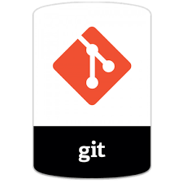

Git es un software de controlador de versiones diseñador por Linux Tovalds y pensado el la eficiencia y confiabilidad del mantenimiento de versiones de
aplicaciones cuando estas tienen un gran número de archivos de codigo de fuente.
Además es un sistema disctribuido de control de código fuente.
Este codigo de fuente se puede contar como:
- ► Ficheros HTML /CSS /Javascript
- ► Ficheros PHP
- ► Ficheros de configuración
- ► Documentación del mismo codigo fuente
¿Qué nos aporta?

- ► Mejora nuestra capacidad de trabajar en equipo
- ► Seguridad: todas las estructuras internas de datos estan firmadas con SHA1, es decir no pueden cambiar el codigo, o nosotros mismos cambiar el codigo sin que nos enteremos.
- ► Podemos volver atrás de una forma rapida
- ► Es un controlador de versiones a través de etiquetas: versión 1.0, versión 1.0.1, versión 1.1, etc.
- ► Tendremos el control sobre como ha cambiado nuestro proyecto con el paso del tiempo.
- ► Auditoria del código: Saber quien ha tocado qué y cuándo.
¿Qué es Github?

Github es un folder para alojar proyectos utilizando el sistema de control e versiones de git. Utiliza un framework Ruby on Railspor Github, Inc. (anteriormente conocida Logical Awesome). Por medio de este folder y su framework el código se almacena de forma pública, aunque también se puede hacer de forma privadam creando una cuenta de pago.